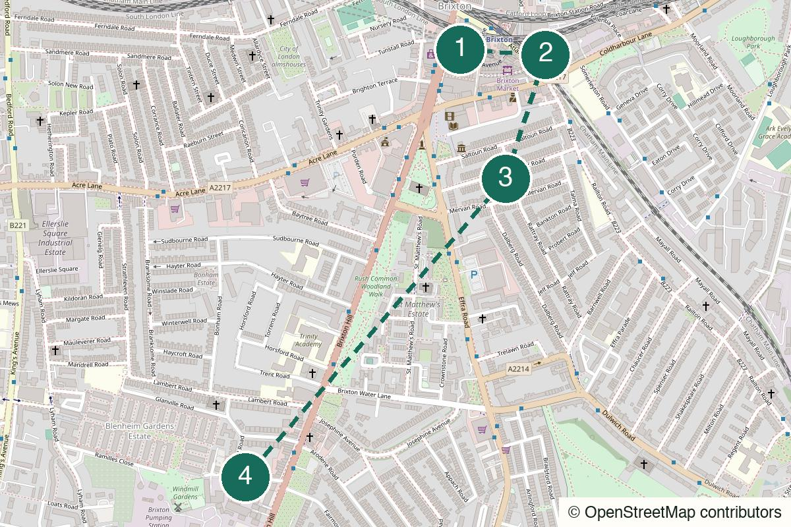

London Not yet field-walked
Crystal Palace
Views, eccentric park details and a pub finish that earns itself.
Start Crystal Palace
Not yet field-walked · verify live details
A district walk for grazing, local pubs and an unknown band worth taking a chance on.
No field notes from readers yet — share one if you walk it.
Brixton Underground – Come out onto Electric Avenue.
Brixton Village
Open the whole walk (opens in a new tab)
Confirm market evening hours, music nights, tickets and the preferred walking route.
We never ask for your location.
Let Brixton set the tempo first, eat in fragments, then move into smaller rooms before deciding whether the night deserves a band.
Not quiet, not fully scheduled and not a route for sitting in one place all night.
Good once a first date has survived: there is enough external stimulation that neither person has to carry the whole conversation.
Strong for a small group that can agree on grazing and a late decision.
The market works alone; the gig branch is optional rather than required.

Brixton Underground, London SW9
From the start Exit onto Electric Avenue and walk towards the covered market arcades.
The lively opening is intentional: arrive in the noise and let it set the tempo.
Walk here from the station to Brixton station → Electric Avenue (opens in a new tab)
Brixton Village, London SW9 8PS
From the previous stop Use the covered arcades for grazing rather than a single committed dinner.
Caribbean, Colombian and Eritrean counters; graze, do not over-plan. Some units may close by early evening, so verify hours.
Walk from the previous stop to Brixton Village + Market Row (opens in a new tab)
38a Kellett Road, London SW2 1EB
From the previous stop Walk through the back streets to Kellett Road and use the pub as the local pause before the music branch.
A Jamaican-run local with jazz on some nights and dominoes as part of the room. Check current music nights first.
Walk from the previous stop to The Effra Hall Tavern (opens in a new tab)
22 Blenheim Gardens, London SW2 5BZ
From the previous stop Continue to Blenheim Gardens and check the current listing before buying a ticket. If there is nothing on, use The Prince Albert on Coldharbour Lane instead.
A scrappy small room for unknown indie bands. The listing decides whether it is the finish or simply a reason to return another night.
Walk from the previous stop to The Windmill (opens in a new tab)
Nearest practical station: Brixton Underground
Brixton is about fifteen minutes from the Windmill; night buses on Brixton Hill are the practical alternative.
Daytime into early evening
Eat standing up in fragments at the start, then treat the pub and gig as separate decisions.
The daylight-to-drink version without a ticket.
The full Brixton format when the listing is worth it.
Stay within the covered arcades longer, then use the pub or a gig only after checking times.
Keep the band, or return to Brixton for one final drink rather than adding another neighbourhood.
Leave after the market or pub and return directly to Brixton station.
Market first. Unknown bands later.
Help keep it useful
Closed gates, changed hours and the point where you bailed are more useful than polite applause.